항공기사 (2004-08-08 기출문제)
1과목: 항공역학
1. 다음의 식에서 음파의 속도가 아닌 것은? (단, K : 비열비, E : 공기의 체적 탄성계수, ρ : 공기밀도, P : 압력, R : 기체상수)
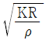
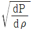
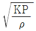
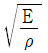
(정답률: 알수없음)

2. 해면상에서 표준대기 온도가 15℃이다. 표준대기 온도가 -50℃가 되는 고도는?
- 10000 m
- 15000 m
- 20000 m
- 25000 m
(정답률: 알수없음)
3. 직경이 50cm인 관에 온도가 300℃이고 압력이 4kg/cm2 인 공기가 20m/sec의 속도로 흘러 들어 간다. 공기는 마찰과 냉각에 의하여 온도는 200℃로 되고 압력은 3kg/cm2이 된다면 속도는 몇 m/sec이겠는가?
- 9
- 18
- 22
- 27
(정답률: 알수없음)
4. 단열흐름의 수축-확대노즐(Convergence Divergence Nozzle)에서 수직충격파가 발생되었을 때 그 전.후에 대하여 성립하는 방정식을 가장 올바르게 나열한 것은?
- 연속 및 에너지방정식, 상태방정식, 등엔트로피 관계방정식
- 에너지 및 운동량방정식, 상태방정식, 등엔트로피 관계방정식
- 연속 및 에너지방정식, 상태방정식, 운동량방정식
- 상태방정식, 등엔트로피 관계방정식, 운동량방정식, 질량보존의 법칙
(정답률: 알수없음)
5. 어떤 항공기가 5,000m 고도를 576 ㎞/h의 속도로서 비행하고 있다. 이때 필요마력 (PS)은 얼마인가? (단, 날개의 면적 = 13.5m2, 항력계수 = 0.027, 공기밀도 = 0.075Kg·sec2/m4)
- 746 PS
- 737 PS
- 670 PS
- 610 PS
(정답률: 알수없음)
6. 다음 그림에서 동일한 면적에 작용하는 항력(Drag)이 제일 작은 것은?
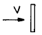
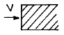
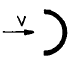
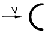
(정답률: 알수없음)
7. 어떤 비행기에 걸리는 중량은 그림과 같다. 기준선을 날개 뿌리(Wing root)의 앞전에 정했을 때 중심의 위치는 기준선 후방 몇 [cm]가 되는가?
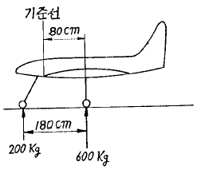
- 35
- 47
- 63
- 69
(정답률: 알수없음)
8. 비행기가 옆놀이(rolling)하는 경우 반드시 빗놀이(yawing)가 동시에 일어난다. 만일 왼쪽(左)으로 롤링하는 경우 오른쪽(右)으로 요잉이 일어나는 것은 바람직한 운동이 아니다. 이같은 비행운동을 무엇이라 하는가?
- 상반각 효과(dihedral effect)
- 상호 효과 (cross effect)
- 도살휜 (dorsal fin)효과
- 역 빗놀이(adverse yaw)현상
(정답률: 알수없음)
9. 주날개에 경계층 격판(boundary fence)을 붙이는 가장 큰 이유는?
- 보조날개의 효과를 높이기 위해
- 큰 받음각이 꼬리날개에 주는 와류의 영향을 막기위해
- downwash를 막기위해
- 익폭에 따라 익단으로 흐르는 공기 흐름을 막기위해
(정답률: 알수없음)
10. 후퇴각을 가진 날개에 대한 다음의 공력특성에서 가장 올바른 것은?
- 임계마하수를 낮춘다.
- 실속특성이 나쁘다.
- 양항력이 증가한다.
- 세로안정성을 돕는다.
(정답률: 알수없음)
11. 조종사가 2,000[m]의 상공을 일정속도로 낙하산으로 강하하고 있다. 조종사 무게가 100[kg], 낙하산 지름이 7[m], 항력계수 CD가 1.3일 때 속도는 몇 [m/s]인가? (단, 공기밀도는 0.1[kg.S2/m4]이다.)
- 6.3
- 5.6
- 4.5
- 3.1
(정답률: 알수없음)
12. 활공기(glider)의 성능에 대한 설명으로 틀린 것은?
- 최소활공비(glide ratio)는 최대양항비와 같다.
- 최대체공시간은 최소침하속도(sinking speed)에서 얻어진다.
- 하강률(rate of descent)은 양항비에 비례한다.
- 활공각은 양항비에 반비례한다.
(정답률: 알수없음)
13. 비행기가 어떤 고도에서 날개에 장착한 피토관의 전압(total pressure)이 1820 ℓ b/ft2 이다. 이 고도에서의 공기 밀도는 2.0×10-3 slug/ft3이고 정압은 1760 ℓb/ft2 이다. 진대기속도(true air speed)를 계산하면?
- 24.5 ft/sec
- 49 ft/sec
- 245 ft/sec
- 490 ft/sec
(정답률: 알수없음)
14. 고속비행시 날개가 비틀려서 도움날개의 효율이 떨어지고 반대효과가 나타나는 현상은?
- Buzz 현상
- Wing dropping 현상
- Aileron reversal 현상
- Adverse Aileron 현상
(정답률: 알수없음)
15. 공중 정지 비행시, 헬리콥터의 추력과 중량과의 관계는 T=kW 이며, 주회전날개의 유효 회전면적은 eA라고 본다. 유도항력마력을 정확하게 표시한 식은?
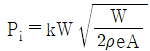
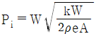
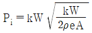
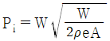
(정답률: 알수없음)
16. 반고정식 주회전날개를 갖는 헬리콥터에서 시위방향의 동적평형(chordwise dynamic balance)을 맞추는 작업을 무엇이라 하는가?
- 트리밍(trimming)
- 얼라인먼트(alinment)
- 스위핑(sweeping)
- 트래킹(tracking)
(정답률: 알수없음)
17. 날개 끝에서의 익단실속을 방지하는 방법으로 맞는 것은?
- 기하학적 받음각을 줄이고, 켐버도 줄인다.
- 기하학적 받음각을 줄이고, 켐버는 키운다.
- 기하학적 받음각을 키우고, 켐버는 줄인다.
- 기하학적 받음각을 키우고, 켐버도 키운다.
(정답률: 알수없음)
18. phugoid motion(long period mode)과 short period mode는 어떤 현상들을 나타내는 것인가?
- static longitudinal stability
- dynamic longitudinal stability
- static lateral stability
- dynamic lateral stability
(정답률: 알수없음)
19. 날개단면(airfoil)인 NACA 65,2-215 에서 6의 의미는?
- 최대 두께의 크기
- 최대 캠버의 크기
- 최대 양력 계수
- 계열(series number)
(정답률: 알수없음)
20. 고속기 날개에서 임계 마하수를 크게 하는 방법으로 가장 올바른 것은?
- 후퇴각을 준다.
- 앞전반경(leading edge radius)를 크게 한다.
- 두꺼운 날개를 사용한다.
- 캠버(camber)를 크게 한다.
(정답률: 알수없음)
2과목: 항공기동력장치
21. 제트 엔진의 추력에 영향을 미치는 요소로 가장 올바른 것은?
- 고도, 비행속도, 온도, 연료압력
- 압력비, 오일온도, 비행속도, 고도
- 연료온도, 대기온도, 회전속도(rpm), 비행속도
- 온도, 회전속도(rpm), 고도, 비행속도
(정답률: 알수없음)
22. 가솔린 엔진에 노킹(knocking)을 방지하기 위한 방법으로 가장 거리가 먼 것은?
- 제폭성이 좋은 연료를 사용한다.
- 연료의 점화지연을 길게 한다.
- 압축비를 낮춘다.
- 연소속도를 느리게 한다.
(정답률: 알수없음)
23. 현재 가스터빈엔진을 장착한 상업용 항공기의 연료로 주로 쓰이고 있는 연료는?
- JP-1
- JP-5
- JP-6
- JET A
(정답률: 알수없음)
24. 다발 내연기관(multi-engine)을 장착한 항공기에서 동기장치(Synchronizing)의 주 목적으로 가장 올바른 것은?
- 다발 항공기에서 각 프로펠러의 회전속도를 자동적으로 동기시킨다.
- 다발 항공기에서 각 발전기의 회전속도를 자동적으로 동기시킨다.
- 다발 항공기에서 항공기 속도를 자동적으로 동기시킨다.
- 다발 항공기에서 각 엔진의 Throttle(Power control) lever를 동기시킨다.
(정답률: 알수없음)
25. 열역학 제1법칙에서 W = ∫ p dv 가 성립되는 경우는?
- 정상류계, 정압과정
- 정상류계, 정적과정
- 밀폐계, 가역과정
- 밀폐계, 정적과정
(정답률: 알수없음)
26. 프로펠러 blade가 1도 변화하는데 엔진 회전수는 약 60∼90[rpm] 정도 변화를 갖게 된다. 프로펠러 blade의 정확한 각도를 가장 올바르게 표현한 것은?
- 프로펠러 깃의 시위와 프로펠러의 회전각이 이루는 각
- 프로펠러 깃의 시위와 프로펠러의 회전면이 이루는 각
- 프로펠러 깃의 시위와 프로펠러 hub alignment가 이루는 각
- 프로펠러 깃의 시위와 항공기의 세로축이 이루는 각
(정답률: 알수없음)
27. 가스터빈 기관의 압축기 실속에 관한 설명을 가장 올바르게 표현한 것은?
- 회전속도에 비해 공기 유입량이 많을 때 발생한다.
- 회전속도에 관계없이 압축기 전방에서 잘 발생한다.
- 공기의 온도가 높을 때 잘 발생한다.
- 연료량이 공기량에 비해 적을 때 잘 발생한다.
(정답률: 알수없음)
28. 현대식 제트엔진에서 사용되는 오일에 요구되는 특성과 가장 거리가 먼 것은?
- 점도지수가 어느 정도 높을 것
- 인화점이 낮을 것
- 기화성이 낮을 것
- 점성과 유동점이 낮을 것
(정답률: 알수없음)
29. 가스터빈기관의 연료계통 중 연료히터(FUEL HEATER)의 목적이 아닌 것은?
- 착화를 쉽게 한다.
- 연료의 동결을 방지한다.
- 연소온도를 증가시킨다.
- 연료의 증기압을 증가시킨다.
(정답률: 알수없음)
30. 제트기관의 노즐면적은 추력 및 꼬리 파이프 온도와 어떤 관계를 갖는가?
- 면적이 증가하면 추력과 꼬리 파이프 온도가 동시에 증가한다.
- 면적이 증가하면 추력은 감소하나 꼬리 파이프 온도는 증가한다.
- 면적이 감소하면 추력은 증가하지만 꼬리 파이프 온도는 변하지 않는다.
- 면적이 감소하면 추력과 꼬리 파이프 온도가 동시에 증가한다.
(정답률: 알수없음)
31. 왕복기관의 back fire에 관한 설명으로 가장 올바른 것은?
- 점화를 너무 일찍시킬 때 발생한다.
- lean mixture일 때 발생한다.
- kick back 과 같은 현상이다.
- 연소가 너무 급격히 진행될 때 발생한다.
(정답률: 알수없음)
32. 다음 그림은 온도-엔트로피 선도들이다. 이중 브레이톤(Brayton)사이클은 어느 것인가? (단, 그림에서 P는 압력, V는 비체적, T는 온도, S는 엔트로피 그리고 C는 상수를 표시한다.)
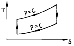
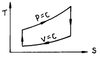
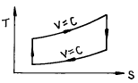
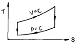
(정답률: 알수없음)
33. 항공기 왕복기관에서 실린더 스커트(cylinder skirt)의 가장 큰 목적은 무엇인가?
- 실린더와 피스톤의 윤활을 돕는다.
- 실린더내 윤활유 흐름을 돕는다.
- 피스톤의 장착을 쉽게 한다.
- 기관의 전면 면적을 적게 한다.
(정답률: 알수없음)
34. 다음의 엔진중에서 고공(高空)성능이 가장 좋은 엔진은?
- 터보 팬 엔진
- 램 제트 엔진
- 펄스 제트 엔진
- 터보 제트 엔진
(정답률: 알수없음)
35. 왕복기관의 부자식 기화기에서 가속장치의 기능을 가장 올바르게 설명한 것은?
- 드로틀(THROTTLE)이 갑자기 열릴 때 연료지연으로 연소정지 또는 역화를 방지하기 위해
- 항공기 속도변화에 따른 혼합비를 조절하기 위해
- 항공기 자세변화에 관계없이 연속적인 연료를 공급하기 위해
- 고고도에서 연료혼합비를 일정하게 유지하기 위해
(정답률: 알수없음)
36. 스파크 갭(spark gap)을 규정한 최대간격보다 넓게 하였을 때 나타나는 영향으로 가장 적합한 설명 내용은?
- 스파크의 크기가 커져서 실린더내의 가스온도가 높아져서 실린더 온도가 상승한다.
- 스파크의 크기가 큼으로 시동하기 쉽다.
- 스파크의 크기가 커지므로 디토네이션(detonation)이 일어나기 쉽다.
- 점화에 필요한 전압이 높아져서 스파크가 생성하기 어렵게 된다.
(정답률: 알수없음)
37. 왕복기관의 크랭크 핀(crank pin)에는 보통 구멍이 뚫려 있는데, 그 이유중 잘못된 것은?
- 크랭크 축의 총중량을 감소시킨다.
- 윤활유의 통로 역할을 한다.
- 슬러지 챔버(sludge chamber) 역할을 한다.
- 마찰을 적게 하기 위한 역할을 한다.
(정답률: 알수없음)
38. 속도가 250m/sec인 항공기에 장착된 가스 터어빈 기관이 25kg/sec 로 공기를 흡입하여 500m/sec로 배기 노즐에서 분사한다. 이때 이 기관의 추진 효율은 얼마인가?
- 50%
- 33.3%
- 66.7%
- 75.2%
(정답률: 알수없음)
39. 헵탄(C7H16) 1kg을 완전연소하는데 필요한 이론공기량을 구하면 몇 kg인가? (단, 완전연소 방정식은 C7H16 + 1102 = 7CO2 + 8H2O 이고, 산소 1kg당 필요한 공기량은 4.31kg이다.)
- 16.20
- 15.97
- 14.12
- 15.17
(정답률: 알수없음)
40. 항공기 왕복기관에서 압축비를 나타내는 공식은? (단, VC = 연소실체적, VD = 행적체적, r = 압축비)
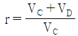
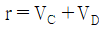
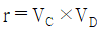
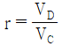
(정답률: 알수없음)
3과목: 항공기구조
41. 그림과 같이 SEMI-MONOCOQUE 구조의 STRINGER에 200kg의 힘이 작용하고 있다. WEB A의 전단흐름 q1=10kg/cm이면 WEB B의 전단흐름 q2의 크기는 얼마인가?
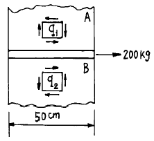
- -12kg/cm
- -16kg/cm
- -6kg/cm
- -14kg/cm
(정답률: 알수없음)
42. 극관성 모멘트가 J 이고, 길이가 L 이며, 전단탄성계수가 G 인 보에 비틀림 하중 T가 가해지는 경우에 발생하는 보의 비틀림 각도는?
- TL/GJ
- GJ/TL
- GT/JL
- TJ/GL
(정답률: 알수없음)
43. 비행기의 강도구조에 사용되는 리벳은 작업시 깨어지는 것을 방지하기 위해 소둔(ANNEALING)상태로 작업에 임해야 한다. 소둔한 리벳이 작업전에 경화(硬化)하는 것을 방지하기 위한 방법은?
- 얼음통에 보관한다.
- 상온의 물에 넣어 둔다.
- 0℃의 기름에 넣어 둔다.
- 공기와의 접촉을 금한다.
(정답률: 알수없음)
44. 수직 분포하중 p를 받는 평판의 처짐 w에 대한 지배 방정식은 다음과 같은 중조화함수로 나타낼 수 있다.
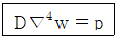
여기에서 D는 평판의 굽힘 강성이다. (단,
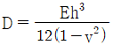
) 동일한 분포하중에 대해 판의 두께가 10배가 되었다면 처짐은 어떻게 변하겠는가?- 1000배
- 0.001배
- 100배
- 0.01배
(정답률: 알수없음)
45. 그림과 같은 항공기의 날개를 보(beam)로 가정할 때 좌굴이 일어날 가능성이 가장 큰 부재는?
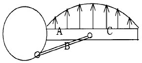
- B
- C
- A
- A 와 B
(정답률: 알수없음)
46. 그림(a)와 같이 Spring계수가 K1, K2인 두 개의 Spring이 연결된 진동계를 그림(b)와 같이 Modeling 했다. K의 값은 얼마인가?
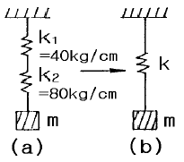
- 0.0375 [kg/cm]
- 26.7 [kg/cm]
- 40 [kg/cm]
- 120 [kg/cm]
(정답률: 알수없음)
47. 다음 그림은 FLANGE AB 에 shear WEB가 달려있는 semimonocoque구조의 일부이다. flange AB의 내력은 어떻게 변하는가? (단, ⊕는 인장 , ⊖는 압축이다.)
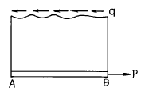
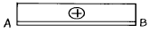
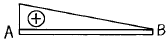
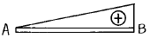
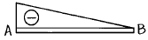
(정답률: 알수없음)
48. two flanged beam의 단면이 그림과 같다. 이 beam 이 전단력 V를 받을 때 전단축의 위치 e를 구하면?
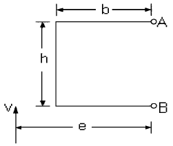
- b
- 1.5b
- 2b
- 4b
(정답률: 알수없음)
49. 다음은 실제로 사용되고 있는 안전율에 대한 설명이다. 가장 올바른 것은?
- 재료의 탄성한도와 허용응력의 비이다.
- 기준강도를 항복점으로 하여 허용응력을 나눈 값이다.
- 극한강도를 허용응력으로 나눈 값이다.
- 재료의 탄성한도를 기준강도로 하여 사용응력과 비교한 것이다.
(정답률: 알수없음)
50. 최소 굽힘 반지름에 대한 설명중 가장 올바른 것은?
- 최소 굽힘 반지름 이내로 구부려 작업해야 한다.
- 일반적으로 두께와 무관하고 재질과 관계된다.
- 풀림처리한 것은 판재두께와 같은 굽힘 반지름을 갖는다.
- 굽힘 반지름이 크면 응력과 변형으로 균열이 발생한다.
(정답률: 알수없음)
51. 보의 굽힘 문제에서 보의 단면의 특성길이보다 보의 길이가 충분히 길지 않으면 보의 전단변형 효과를 고려하여야 한다. 전단변형 효과를 고려한 영향으로 나타나는 결과가 아닌 것은?
- 전단변형 효과를 고려하면 고려하지 않았을 때 보다 처짐이 크게 나타난다.
- 전단변형 효과를 고려하면 좌굴하중이 크게 나타난다.
- 전단변형 효과를 고려하면 고유 주파수가 더 작게 나타난다.
- 전단변형 효과를 고려하면 굽힘에 의한 보의 수직응력이 더 크게 산출된다.
(정답률: 알수없음)
52. 피로응력(fatigue stress)의 종류에 속하지 않는 것은?
- 역전응력(reversed stress)
- 교호응력(alternating stress)
- 맥동응력(pulsating stress)
- 잔류응력(residual stress)
(정답률: 알수없음)
53. 그림과 같은 계가 자유진동을 할 때 주기를 나타내는 식은?
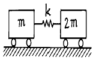
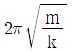
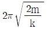
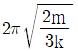
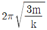
(정답률: 알수없음)
54. 탄성계수들의 관계를 가장 올바르게 표현한 식은? (단, G: 전단 탄성계수, E: 탄성계수, m: 1/ν 이며, ν는 포와송비이다.)
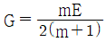
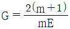
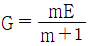
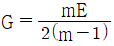
(정답률: 알수없음)
55. 수평정상비행시와 가속비행시의 비행기에 걸리는 하중비를 하중계수(load factor)라 한다. 다음 중 하중계수에 대한 설명으로 가장 관계가 먼 것은?
- 비행 중 발생할 수 있는 최대 하중계수를 한계하중계수 (limit load factor)라 한다.
- 한계하중계수는 반복하중이 작용하여도 기체 구조부에 영구 변형이 남지 않는 설계상의 하중이다.
- 한계하중계수는 반복하중이 작용하여도 기체 구조부의 파괴가 발생하지 않는 설계상의 하중이다.
- 파괴하중계수(ultimate load factor) = 한계하중계수 × 안전율 이다.
(정답률: 알수없음)
56. 수평 비행중인 비행기의 날개 외피에 작용하는 응력의 형태는?
- 윗면은 인장응력, 아랫면은 압축응력
- 윗면은 압축응력, 아랫면은 인장응력
- 윗면, 아랫면 모두 인장응력
- 윗면, 아랫면 모두 압축응력
(정답률: 알수없음)
57. 항공기 구조설계시 구조물의 피로파괴방지를 위해 유의해야 할 점으로 잘못된 설명은?
- 균열의 전파방지를 위해 이중구조를 사용한다.
- 구조의 각부분에 작용하는 응력은 재료의 피로한계 보다 낮게한다.
- 형태는 가능한 한 대칭으로 한다.
- 하중이 직선으로 전달되지 않도록 불연속부를 많이 둔다.
(정답률: 알수없음)
58. 그림은 4개의 flange A.B.C.D를 web로 연결하여 만든 Box spar의 단면을 나타내며, 여기서 각각의 flange 단면의 넓이는 S 이다. X축 및 Y축에 관한 2차 단면모멘트 Ixx 및 Iyy는?
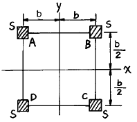
- Ixx = b2s, Iyy = 8sb2
- Ixx =
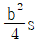
, Iyy = 16sb2 - Ixx = b2s, Iyy = 4sb2
- Ixx = 2b2s, Iyy = 4sb2
(정답률: 알수없음)
59. 기둥의 단말조건과 임계하중의 관계인 오일러(Euler)의 식 Pcr = nπ2EI/L2 에서 양단 고정 일때의 단말조건계수 n은?
- 1
- 2
- 3
- 4
(정답률: 알수없음)
60. 하중 P1 이 작용할 때의 량과 하중 P2가 작용할 때의 량을 합함으로서 P1 과 P2가 동시에 작용할 때의 량을 얻는 것이 중첩의 원리가 성립하는 경우이다. 다음중 중첩의 원리가 적용되지 못하는 것은 어느 것인가?
- 변형
- 탄성 에너지
- 변형도
- 응력
(정답률: 알수없음)
4과목: 항공장비
61. 자동 조종 장치(autopilot system)에서 기수 방위를 일정하게 유지시켜 비행하는 모드는?
- Navigation Mode
- Altitude Hold Mode
- Heading Mode
- Roll Attitude Mode
(정답률: 알수없음)
62. 일정한 온도에서 진동을 가하여 기계적 오차를 뺀 계기 특유의 오차는?
- 히스테리스오차
- 탄성오차
- 눈금오차
- 온도오차
(정답률: 알수없음)
63. 객실에 온도를 높여 주는 것은?
- TRIM AIR
- ACM OUT-LET AIR
- HEAT EXCHANGER OUT-LET AIR
- VENT FAN OUT-LET AIR
(정답률: 알수없음)
64. ND(NAVIGATION DISPLAY)화면에 나타나지 않는 MODE는?
- APPROACH MODE
- VOR MODE
- MAP MODE
- VERTIACL SPEED MODE
(정답률: 알수없음)
65. 유압펌프 중 현대 항공기에 많이 사용되는 고압(3,000 PSI) 펌프는?
- VANE TYPE
- PISTON TYPE
- GEAR TYPE
- GEROTOR TYPE
(정답률: 알수없음)
66. 항공기 유압계통의 여압 레저버(Reservoir)에 관한 내용으로 가장 관계가 먼 것은?
- 별도의 과급기(Super Charger)를 설치하여 가압한다.
- 여압 레저버 상단에는 공기 배출용 릴리프 밸브가 장착되어 있다.
- 터빈기관은 블리드 에어(Bleed Air)를 이용하여 가압한다.
- 벤츄리-티(Verturi-Tee)를 이용하여 가압한다.
(정답률: 알수없음)
67. 객실고도(cabin altitude)가 비행고도(flight altitude) 보다 높을 때 작동되는 안전밸브는?
- 배기밸브(out-flow valve)
- 정압 안전 릴리프밸브 (positive safety relief valve)
- 부압 안전 릴리프밸브 (negative safety relief valve)
- 혼합밸브(mixing valve)
(정답률: 알수없음)
68. 250° 방위를 지시하고 있는 자기콤파스(Magnetic Compass)에서 편각이 3° E, 자차가 -6° 라면 이때의 진방위(眞方位)는 얼마인가?
- 256°
- 253°
- 247°
- 244°
(정답률: 알수없음)
69. 직권식 직류모터인 항공기 발동기의 시동기(starter)를 축전지(Battery)의 장착을 잘못하여 극(pole)이 서로 바뀌었다면 어떤 현상이 예상되는가?
- 정상적인 시동을 기대할 수 없다.
- 시동기의 회전방향이 반대이나 시동은 된다.
- 시동기의 회전방향이 반대이므로 시동이 안된다.
- 시동기의 회전방향이 정상방향과 같으므로 시동에 지장이 없다.
(정답률: 알수없음)
70. 계기 착륙 장치(Instrument Landing System : ILS)에서 수신된 정보를 지시하는 계기는?
- 무선방위 지시계(radio magnetic indicator, RMI)
- ILS 레이더(radar)
- 대기속도 지시계(Air Speed Indicator)
- 수평자세지시계(Horizontal Situation Indicator, HSI)
(정답률: 알수없음)
71. 쟈이로(gyroscope)의 강직성(rigidity)을 크게 하는 것은?
- 로우터의 회전 각속도 감소
- 로우터의 관성 모멘트 증가
- 외력에 의한 모멘트 증가
- 구동 진공압의 감소
(정답률: 알수없음)
72. 비행고도중 QNH 방식에 의한 고도는?
- 절대고도
- 진고도
- 기압고도
- 밀도고도
(정답률: 알수없음)
73. 직류 발전기 2대를 병렬 운전하는 중 한쪽 발전기가 고장이 났을 경우, 다른 발전기는?
- 부하 전류가 줄고 전압은 올라간다.
- 부하 전류가 늘고 전압은 약간 내려간다.
- 부하 전류는 변하지 않고 전압만 올라간다.
- 부하 전류는 늘고 전압은 올라간다.
(정답률: 알수없음)
74. FMS(Flight Management System)의 구성과 관계 없는 것은?
- 센서
- 정보처리부
- 표시부
- 자세부(수동식)
(정답률: 알수없음)
75. 전리층 전파에 대한 설명으로 가장 올바른 것은?
- 위성에서 발사된 신호가 전리층을 통과하여 지구상에 도달한 전파
- 전리층에 반사, 굴절되어 지구상에 도달한 전파
- 지표에 반사되어 전리층을 통과한 전파
- 전리층에서 만들어진 전파가 지구상에 도달한 전파
(정답률: 알수없음)
76. 유압계통에서 fluid의 흐르는 량을 측정하는 단위는?
- R.P.M
- G.P.M
- P.S.I
- P.P.M
(정답률: 알수없음)
77. 직류를 주전원으로 하는 항공기에서 400Hz의 교류를 발생시키는 장치는?
- 컨버터(Converter)
- 정류기(Rectifier)
- 인버터(Inverter)
- 변압기(Transformer)
(정답률: 알수없음)
78. 항공기 착륙장치에 장착되어 있는 토큐 링크(torque link)와 가장 관계가 먼 것은?
- 지상과 비행상태를 지시할 수 있다.
- shock strut 실린더의 회전을 방지한다.
- 착륙시에 착륙장치에 압력을 증가시킨다.
- shock strut 내부 피스톤이 빠져 나가는 것을 방지한다.
(정답률: 알수없음)
79. 항공기에 사용되는 에어콘의 형식중 베이퍼 싸이클(vapor cycle)식에 사용되는 부품이 아닌 것은?
- 후방 냉각기(after cooler)
- 혼합 밸브(mixing valve)
- 에어 터어빈(air turbine)
- 냉동기(refregerator)
(정답률: 알수없음)
80. 24[V] 2마력일 때 전동기의 효율은 80[%]라고 한다. 이 전동기가 100[%]효율을 나타내기 위한 전동기의 입력전류는 몇 [A]인가?
- 50.1
- 62.8
- 77.8
- 82.6
(정답률: 알수없음)
5과목: 항공제어공학
81. 다음과 같은 전달함수를 갖는 시스템을 고려할 때
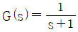
이 시스템의 위상을 ω = 1 rad/sec 에 대해서 구하면?- 30도
- 45도
- -30도
- -45도
(정답률: 알수없음)
82. 전달함수가
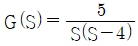
인 제어계의 주파수 응답의 진폭비와 위상각을 옳게 구한 것은?- 진폭비 :
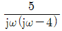
, 위상각 :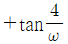
- 진폭비 :
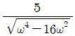
, 위상각 :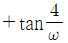
- 진폭비 :
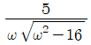
, 위상각 : - 진폭비 : , 위상각 :
(정답률: 알수없음)
83. 시스템의 위상여유와 가장 관련이 적은 것은?
- 시스템의 응답속도
- 시스템의 상대적 안정도
- 시스템의 감쇠계수
- 시스템의 최대 오버슈트
(정답률: 알수없음)
84. 그림의 블럭선도를 식으로 나타낸 것중 맞는 것은?
(정답률: 알수없음)
85. 다음 블럭선도의 제어계에서 근(root)이 최대의 허수값을 취할 때의 양의 K값을 구하면?
- 6
- 4
- 3
- 2
(정답률: 알수없음)
86. 정상상태(steady-state condition)에서 왜란의 영향을 받지 않는 제어계는?
- 미분(derivative)
- 적분(integral)
- 비례(proportional)
- 단위귀환(unit feedback)
(정답률: 알수없음)
87. 정상상태(Steady-State)때만 가장 우수한 특성을 갖는 자동제어계는 어느 것인가?
- Proportional Control System
- Integral Control System
- Integral Plus Proportional Control System
- Rate Control System
(정답률: 알수없음)
88. 근궤적에서 이탈점(breakaway point)이란?
- 더이상 이득을 계산할 수 없는 점
- 근궤적이 허수축과 만나는 점
- 이득의 증가에 따라 특성근이 실수에서 허수로 변하는 점
- 영점의 근궤적과 극점의 근궤적이 서로 만나는 점
(정답률: 알수없음)
89. S의 다차방정식의 실근을 구하는 방식은 어느 것인가?
- Shin Nge Lin's method
- L'Hospital rule
- Heviside rule
- Newton's remainder method
(정답률: 알수없음)
90. 자동제어계에서 특성 방정식의 근궤적이 원이 되려면 그 때 필요한 조건은 어느 것인가?
- 유한극점 3개, 유한영점 1개
- 유한극점 2개 이상, 유한영점 1개 이상
- 유한극점 2개, 유한영점 1개
- 유한극점 1개, 유한영점 2개
(정답률: 알수없음)
91. 1차 미분방정식으로 되어 있는 특성함수를 가진 제어계에서 계단함수의 입력을 가한 후 시정수(time constant) 만큼 시간이 경과되었을 때, 계의 응답은 최종치의 몇 %에 도달되는가?
- 27.3
- 50
- 63.2
- 100
(정답률: 알수없음)
92. 단주기 운동특성이 나쁜 항공기에 안정성 증대장치를 설계하고자 한다. 어떤 상태변수를 되먹임 해야 하는가?
- 피치각
- 피치각속도
- 받음각
- 속도
(정답률: 알수없음)
93. 근궤적이 S평면의 허수축과 교차할 때 폐루우프의 제어계는?
- 판정 불능이다.
- 불안정하다.
- 안정하다.
- 임계상태이다.
(정답률: 알수없음)
94. 단위계단함수 (unit step function)의 라플라스 변환값은 어느 것인가?
- 1
- S
- 1/S
- 1/S2
(정답률: 알수없음)
95. 근궤적에서 이득을 증가시키면 실수축에 있던 근들이 허수값을 가지면서 나누어진다면 이 시스템의 과도응답 특성은 어떠한가?
- 순수감쇠에서 진동감쇠로 변화
- 순수감쇠에서 발산으로 변화
- 진동발산에서 순수발산으로 변화
- 진동감쇠에서 순수감쇠로 변화
(정답률: 알수없음)
96. 엔진회전속도 제어장치에서 비교부(comparator)에 해당되는 것은?
- 액추에이터(actuator)
- 스로틀레버(throttle lever)
- 피치레버(pitch control lever)
- 조속기(governor)
(정답률: 알수없음)
97. 그림의 장치에서 전달함수 는?
(정답률: 알수없음)
98. 기계시스템과 전기시스템을 유추할 때, 힘-전압 유추법에 바르게 연결되지 않은 것은?
- 감쇠계수 - 저항의 역수
- 속도 - 전하
- 질량 - 인덕턴스
- 스프링계수 - 커패시턴스의 역수
(정답률: 알수없음)
99. 시계방향의 Nyquist경로에 대하여 어떤 시스템의 개루프 전달함수 의 Nyquist 선도가 그림과 같이 그려진다. 위의 개루프 전달함수를 포함하여 단위 되먹임(unity feedback)제어로 구성된 폐루프 시스템의 안정도에 대한 설명으로 가장 올바른 것은? (단, K＞0, T＞0)
- 판정할 수 없다.
- +1 +j0주위를 시계방향으로 한바퀴 돌기 때문에 폐루프 시스템은 불안정하다.
- 폐루프 시스템은 안정할 때도 있고, 불안정할 때도 있다.
- 폐루프 시스템은 안정하다.
(정답률: 알수없음)
100. 항공기의 종특성 방정식의 근이 허수축상에 오게되면 주로 어떤 결과를 초래하겠는가?
- 일정 진폭을 갖는 Yawing 진동
- 일정 진폭을 갖는 고도변화 진동
- 일정 진폭을 갖는 Rolling 진동
- 감쇄 진폭을 갖는 Pitching 진동
(정답률: 알수없음)